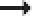
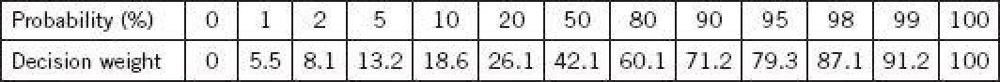
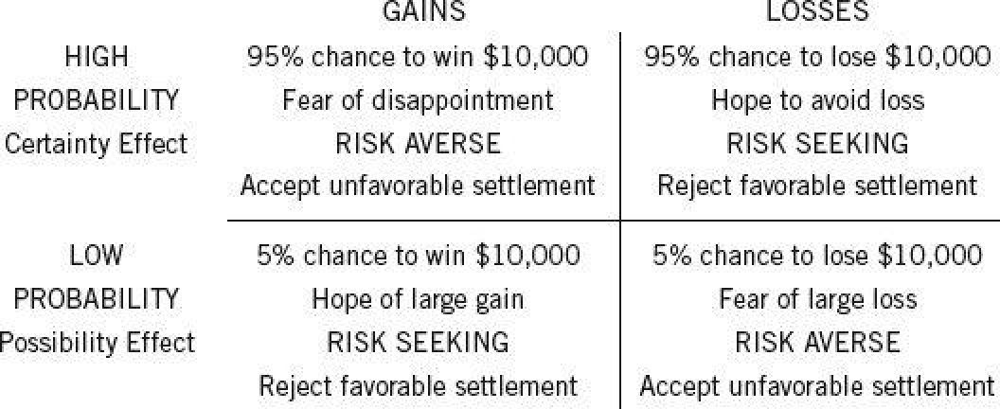

Whenever you form a global evaluation of a complex object—a car you may buy, your son-in-law, or an uncertain situation—you assign weights to its characteristics. This is simply a cumbersome way of saying that some characteristics influence your assessment more than others do. The weighting occurs whether or not you are aware of it; it is an operation of System 1. Your overall evaluation of a car may put more or less weight on gas economy, comfort, or appearance. Your judgment of your son-in-law may depend more or less on how rich or handsome or reliable he is. Similarly, your assessment of an uncertain prospect assigns weights to the possible outcomes. The weights are certainly correlated with the probabilities of these outcomes: a 50% chance to win a million is much more attractive than a 1% chance to win the same amount. The assignment of weights is sometimes conscious and deliberate. Most often, however, you are just an observer to a global evaluation that your System 1 delivers.
Changing Chances
One reason for the popularity of the gambling metaphor in the study of decision making is that it provides a natural rule for the assignment of weights to the outcomes of a prospect: the more probable an outcome, the more weight it should have. The expected value of a gamble is the average of its outcomes, each weighted by its probability. For example, the expected value of “20% chance to win $1,000 and 75% chance to win $100” is $275. In the pre-Bernoulli days, gambles were assessed by their expected value. Bernoulli retained this method for assigning weights to the outcomes, which is known as the expectation principle, but applied it to the psychological value of the outcomes. The utility of a gamble, in his theory, is the average of the utilities of its outcomes, each weighted by its probability.
The expectation principle does not correctly describe how you think about the probabilities related to risky prospects. In the four examples below, your chances of receiving $1 million improve by 5%. Is the news equally good in each case?
A. From 0 to 5%
B. From 5% to 10%
C. From 60% to 65%
D. From 95% to 100%
The expectation principle asserts that your utility increases in each case by exactly 5% of the utility of receiving $1 million. Does this prediction describe your experiences? Of course not.
Everyone agrees that 0  5% and 95% 100% are more impressive than either 5% 10% or 60% 65%. Increasing the chances from 0 to 5% transforms the situation, creating a possibility that did not exist earlier, a hope of winning the prize. It is a qualitative change, where 5 10% is only a quantitative improvement. The change from 5% to 10% doubles the probability of winning, but there is general agreement that the psychological value of the prospect does not double. The large impact of 0 5% illustrates the possibility effect, which causes highly unlikely outcomes to be weighted disproportionately more than they “deserve.” People who buy lottery tickets in vast amounts show themselves willing to pay much more than expected value for very small chances to win a large prize.
The improvement from 95% to 100% is another qualitative change that has a large impact, the certainty effect. Outcomes that are almost certain are given less weight than their probability justifies. To appreciate the certainty effect, imagine that you inherited $1 million, but your greedy stepsister has contested the will in court. The decision is expected tomorrow. Your lawyer assures you that you have a strong case and that you have a 95% chance to win, but he takes pains to remind you that judicial decisions are never perfectly predictable. Now you are approached by a risk-adjustment company, which offers to buy your case for $910,000 outright—take it or leave it. The offer is lower (by $40,000!) than the expected value of waiting for the judgment (which is $950,000), but are you quite sure you would want to reject it? If such an event actually happens in your life, you should know that a large industry of “structured settlements” exists to provide certainty at a heft y price, by taking advantage of the certainty effect.
Possibility and certainty have similarly powerful effects in the domain of losses. When a loved one is wheeled into surgery, a 5% risk that an amputation will be necessary is very bad—much more than half as bad as a 10% risk. Because of the possibility effect, we tend to overweight small risks and are willing to pay far more than expected value to eliminate them altogether. The psychological difference between a 95% risk of disaster and the certainty of disaster appears to be even greater; the sliver of hope that everything could still be okay looms very large. Overweighting of small probabilities increases the attractiveness of both gambles and insurance policies.
The conclusion is straightforward: the decision weights that people assign to outcomes are not identical to the probabilities of these outcomes, contrary to the expectation principle. Improbable outcomes are overweighted—this is the possibility effect. Outcomes that are almost certain are underweighted relative to actual certainty. The expectation principle, by which values are weighted by their probability, is poor psychology.
The plot thickens, however, because there is a powerful argument that a decision maker who wishes to be rational must conform to the expectation principle. This was the main point of the axiomatic version of utility theory that von Neumann and Morgenstern introduced in 1944. They proved that any weighting of uncertain outcomes that is not strictly proportional to probability leads to inconsistencies and other disasters. Their derivation of the expectation principle from axioms of rational choice was immediately recognized as a monumental achievement, which placed expected utility theory at the core of the rational agent model in economics and other social sciences. Thirty years later, when Amos introduced me to their work, he presented it as an object of awe. He also introduced me Bima a me Bimto a famous challenge to that theory.
Allais’s Paradox
In 1952, a few years after the publication of von Neumann and Morgenstern’s theory, a meeting was convened in Paris to discuss the economics of risk. Many of the most renowned economists of the time were in attendance. The American guests included the future Nobel laureates Paul Samuelson, Kenneth Arrow, and Milton Friedman, as well as the leading statistician Jimmie Savage.
One of the organizers of the Paris meeting was Maurice Allais, who would also receive a Nobel Prize some years later. Allais had something up his sleeve, a couple of questions on choice that he presented to his distinguished audience. In the terms of this chapter, Allais intended to show that his guests were susceptible to a certainty effect and therefore violated expected utility theory and the axioms of rational choice on which that theory rests. The following set of choices is a simplified version of the puzzle that Allais constructed. In problems A and B, which would you choose?
A. 61% chance to win $520,000 OR 63% chance to win $500,000
B. 98% chance to win $520,000 OR 100% chance to win $500,000
If you are like most other people, you preferred the left-hand option in problem A and you preferred the right-hand option in problem B. If these were your preferences, you have just committed a logical sin and violated the rules of rational choice. The illustrious economists assembled in Paris committed similar sins in a more involved version of the “Allais paradox.”
To see why these choices are problematic, imagine that the outcome will be determined by a blind draw from an urn that contains 100 marbles—you win if you draw a red marble, you lose if you draw white. In problem A, almost everybody prefers the left-hand urn, although it has fewer winning red marbles, because the difference in the size of the prize is more impressive than the difference in the chances of winning. In problem B, a large majority chooses the urn that guarantees a gain of $500,000. Furthermore, people are comfortable with both choices—until they are led through the logic of the problem.
Compare the two problems, and you will see that the two urns of problem B are more favorable versions of the urns of problem A, with 37 white marbles replaced by red winning marbles in each urn. The improvement on the left is clearly superior to the improvement on the right, since each red marble gives you a chance to win $520,000 on the left and only $500,000 on the right. So you started in the first problem with a preference for the left-hand urn, which was then improved more than the right-hand urn—but now you like the one on the right! This pattern of choices does not make logical sense, but a psychological explanation is readily available: the certainty effect is at work. The 2% difference between a 100% and a 98% chance to win in problem B is vastly more impressive than the same difference between 63% and 61% in problem A.
As Allais had anticipated, the sophisticated participants at the meeting did not notice that their preferences violated utility theory until he drew their attention to that fact as the meeting was about to end. Allais had intended this announcement to be a bombshell: the leading decision theorists in the world had preferences that were inconsistent with their own view of rationality! He apparently believed that his audience would be persuaded to give up the approach that Bima ahat Bimhe rather contemptuously labeled “the American school” and adopt an alternative logic of choice that he had developed. He was to be sorely disappointed.
Economists who were not aficionados of decision theory mostly ignored the Allais problem. As often happens when a theory that has been widely adopted and found useful is challenged, they noted the problem as an anomaly and continued using expected utility theory as if nothing had happened. In contrast, decision theorists—a mixed collection of statisticians, economists, philosophers, and psychologists—took Allais’s challenge very seriously. When Amos and I began our work, one of our initial goals was to develop a satisfactory psychological account of Allais’s paradox.
Most decision theorists, notably including Allais, maintained their belief in human rationality and tried to bend the rules of rational choice to make the Allais pattern permissible. Over the years there have been multiple attempts to find a plausible justification for the certainty effect, none very convincing. Amos had little patience for these efforts; he called the theorists who tried to rationalize violations of utility theory “lawyers for the misguided.” We went in another direction. We retained utility theory as a logic of rational choice but abandoned the idea that people are perfectly rational choosers. We took on the task of developing a psychological theory that would describe the choices people make, regardless of whether they are rational. In prospect theory, decision weights would not be identical to probabilities.
Decision Weights
Many years after we published prospect theory, Amos and I carried out a study in which we measured the decision weights that explained people’s preferences for gambles with modest monetary stakes. The estimates for gains are shown in table 4.

Table 4
You can see that the decision weights are identical to the corresponding probabilities at the extremes: both equal to 0 when the outcome is impossible, and both equal to 100 when the outcome is a sure thing. However, decision weights depart sharply from probabilities near these points. At the low end, we find the possibility effect: unlikely events are considerably overweighted. For example, the decision weight that corresponds to a 2% chance is 8.1. If people conformed to the axioms of rational choice, the decision weight would be 2—so the rare event is overweighted by a factor of 4. The certainty effect at the other end of the probability scale is even more striking. A 2% risk of not winning the prize reduces the utility of the gamble by 13%, from 100 to 87.1.
To appreciate the asymmetry between the possibility effect and the certainty effect, imagine first that you have a 1% chance to win $1 million. You will know the outcome tomorrow. Now, imagine that you are almost certain to win $1 million, but there is a 1% chance that you will not. Again, you will learn the outcome tomorrow. The anxiety of the second situation appears to be more salient than the hope in the first. The certainty effect is also more striking than the possibility effect if the outcome is a surgical disaster rather than a financial gain. Compare the intensity with which you focus on the faint sliver of hope in an operation that is almost certain to be fatal, compared to the fear of a 1% risk.
< Bima av> < Bimp height="0%" width="5%">The combination of the certainty effect and possibility effects at the two ends of the probability scale is inevitably accompanied by inadequate sensitivity to intermediate probabilities. You can see that the range of probabilities between 5% and 95% is associated with a much smaller range of decision weights (from 13.2 to 79.3), about two-thirds as much as rationally expected. Neuroscientists have confirmed these observations, finding regions of the brain that respond to changes in the probability of winning a prize. The brain’s response to variations of probabilities is strikingly similar to the decision weights estimated from choices.Probabilities that are extremely low or high (below 1% or above 99%) are a special case. It is difficult to assign a unique decision weight to very rare events, because they are sometimes ignored altogether, effectively assigned a decision weight of zero. On the other hand, when you do not ignore the very rare events, you will certainly overweight them. Most of us spend very little time worrying about nuclear meltdowns or fantasizing about large inheritances from unknown relatives. However, when an unlikely event becomes the focus of attention, we will assign it much more weight than its probability deserves. Furthermore, people are almost completely insensitive to variations of risk among small probabilities. A cancer risk of 0.001% is not easily distinguished from a risk of 0.00001%, although the former would translate to 3,000 cancers for the population of the United States, and the latter to 30.
When you pay attention to a threat, you worry—and the decision weights reflect how much you worry. Because of the possibility effect, the worry is not proportional to the probability of the threat. Reducing or mitigating the risk is not adequate; to eliminate the worry the probability must be brought down to zero.
The question below is adapted from a study of the rationality of consumer valuations of health risks, which was published by a team of economists in the 1980s. The survey was addressed to parents of small children.
Suppose that you currently use an insect spray that costs you $10 per bottle and it results in 15 inhalation poisonings and 15 child poisonings for every 10,000 bottles of insect spray that are used.
You learn of a more expensive insecticide that reduces each of the risks to 5 for every 10,000 bottles. How much would you be willing to pay for it?
The parents were willing to pay an additional $2.38, on average, to reduce the risks by two-thirds from 15 per 10,000 bottles to 5. They were willing to pay $8.09, more than three times as much, to eliminate it completely. Other questions showed that the parents treated the two risks (inhalation and child poisoning) as separate worries and were willing to pay a certainty premium for the complete elimination of either one. This premium is compatible with the psychology of worry but not with the rational model.
The Fourfold Pattern
When Amos and I began our work on prospect theory, we quickly reached two conclusions: people attach values to gains and losses rather than to wealth, and the decision weights that they assign to outcomes are different from probabilities. Neither idea was completely new, but in combination they explained a distinctive pattern of preferences that we ca Bima ae ca Bimlled the fourfold pattern. The name has stuck. The scenarios are illustrated below.

Figure 13
The fourfold pattern of preferences is considered one of the core achievements of prospect theory. Three of the four cells are familiar; the fourth (top right) was new and unexpected.
The results for the top right cell initially surprised us. We were accustomed to think in terms of risk aversion except for the bottom left cell, where lotteries are preferred. When we looked at our choices for bad options, we quickly realized that we were just as risk seeking in the domain of losses as we were risk averse in the domain of gains. We were not the first to observe risk seeking with negative prospects—at least two authors had reported that fact, but they had not made much of it. However, we were fortunate to have a framework that made the finding of risk seeking easy to interpret, and that was a milestone in our thinking. Indeed, we identified two reasons for this effect.
First, there is diminishing sensitivity. The sure loss is very aversive because the reaction to a loss of $900 is more than 90% as intense as the reaction to a loss of $1,000. The second factor may be even more powerful: the decision weight that corresponds to a probability of 90% is only about 71, much lower than the probability. The result is that when you consider a choice between a sure loss and a gamble with a high probability o Bima aty o Bimf a larger loss, diminishing sensitivity makes the sure loss more aversive, and the certainty effect reduces the aversiveness of the gamble. The same two factors enhance the attractiveness of the sure thing and reduce the attractiveness of the gamble when the outcomes are positive.
The shape of the value function and the decision weights both contribute to the pattern observed in the top row of table 13. In the bottom row, however, the two factors operate in opposite directions: diminishing sensitivity continues to favor risk aversion for gains and risk seeking for losses, but the overweighting of low probabilities overcomes this effect and produces the observed pattern of gambling for gains and caution for losses.
Many unfortunate human situations unfold in the top right cell. This is where people who face very bad options take desperate gambles, accepting a high probability of making things worse in exchange for a small hope of avoiding a large loss. Risk taking of this kind often turns manageable failures into disasters. The thought of accepting the large sure loss is too painful, and the hope of complete relief too enticing, to make the sensible decision that it is time to cut one’s losses. This is where businesses that are losing ground to a superior technology waste their remaining assets in futile attempts to catch up. Because defeat is so difficult to accept, the losing side in wars often fights long past the point at which the victory of the other side is certain, and only a matter of time.
Gambling in the Shadow of the Law
The legal scholar Chris Guthrie has offered a compelling application of the fourfold pattern to two situations in which the plaintiff and the defendant in a civil suit consider a possible settlement. The situations differ in the strength of the plaintiff’s case.
As in a scenario we saw earlier, you are the plaintiff in a civil suit in which you have made a claim for a large sum in damages. The trial is going very well and your lawyer cites expert opinion that you have a 95% chance to win outright, but adds the caution, “You never really know the outcome until the jury comes in.” Your lawyer urges you to accept a settlement in which you might get only 90% of your claim. You are in the top left cell of the fourfold pattern, and the question on your mind is, “Am I willing to take even a small chance of getting nothing at all? Even 90% of the claim is a great deal of money, and I can walk away with it now.” Two emotions are evoked, both driving in the same direction: the attraction of a sure (and substantial) gain and the fear of intense disappointment and regret if you reject a settlement and lose in court. You can feel the pressure that typically leads to cautious behavior in this situation. The plaintiff with a strong case is likely to be risk averse.
Now step into the shoes of the defendant in the same case. Although you have not completely given up hope of a decision in your favor, you realize that the trial is going poorly. The plaintiff’s lawyers have proposed a settlement in which you would have to pay 90% of their original claim, and it is clear they will not accept less. Will you settle, or will you pursue the case? Because you face a high probability of a loss, your situation belongs in the top right cell. The temptation to fight on is strong: the settlement that the plaintiff has offered is almost as painful as the worst outcome you face, and there is still hope of prevailing in court. Here again, two emotions are involved: the sure loss is repugnant and the possibility of winning in court is highly attractive. A defendant with a weak case is likely to be risk seeking, Bima aing, Bim prepared to gamble rather than accept a very unfavorable settlement. In the face-off between a risk-averse plaintiff and a risk-seeking defendant, the defendant holds the stronger hand. The superior bargaining position of the defendant should be reflected in negotiated settlements, with the plaintiff settling for less than the statistically expected outcome of the trial. This prediction from the fourfold pattern was confirmed by experiments conducted with law students and practicing judges, and also by analyses of actual negotiations in the shadow of civil trials.
Now consider “frivolous litigation,” when a plaintiff with a flimsy case files a large claim that is most likely to fail in court. Both sides are aware of the probabilities, and both know that in a negotiated settlement the plaintiff will get only a small fraction of the amount of the claim. The negotiation is conducted in the bottom row of the fourfold pattern. The plaintiff is in the left-hand cell, with a small chance to win a very large amount; the frivolous claim is a lottery ticket for a large prize. Overweighting the small chance of success is natural in this situation, leading the plaintiff to be bold and aggressive in the negotiation. For the defendant, the suit is a nuisance with a small risk of a very bad outcome. Overweighting the small chance of a large loss favors risk aversion, and settling for a modest amount is equivalent to purchasing insurance against the unlikely event of a bad verdict. The shoe is now on the other foot: the plaintiff is willing to gamble and the defendant wants to be safe. Plaintiffs with frivolous claims are likely to obtain a more generous settlement than the statistics of the situation justify.
The decisions described by the fourfold pattern are not obviously unreasonable. You can empathize in each case with the feelings of the plaintiff and the defendant that lead them to adopt a combative or an accommodating posture. In the long run, however, deviations from expected value are likely to be costly. Consider a large organization, the City of New York, and suppose it faces 200 “frivolous” suits each year, each with a 5% chance to cost the city $1 million. Suppose further that in each case the city could settle the lawsuit for a payment of $100,000. The city considers two alternative policies that it will apply to all such cases: settle or go to trial. (For simplicity, I ignore legal costs.)
When you take the long view of many similar decisions, you can see that paying a premium to avoid a small risk of a large loss is costly. A similar analysis applies to each of the cells of the fourfold pattern: systematic deviations from expected value are costly in the long run—and this rule applies to both risk aversion and risk seeking. Consistent overweighting of improbable outcomes—a feature of intuitive decision making—eventually leads to inferior outcomes.
Speaking Of The Fourfold Pattern
“He is tempted to settle this frivolous claim to avoid a freak loss, however unlikely. That’s overweighting of small probabilities. Since he is likely to face many similar problems, he would be better off not yielding.”
“We never let our vacations hang Bima aang Bimon a last-minute deal. We’re willing to pay a lot for certainty.”
“They will not cut their losses so long as there is a chance of breaking even. This is risk-seeking in the losses.”
“They know the risk of a gas explosion is minuscule, but they want it mitigated. It’s a possibility effect, and they want peace of mind.”
P